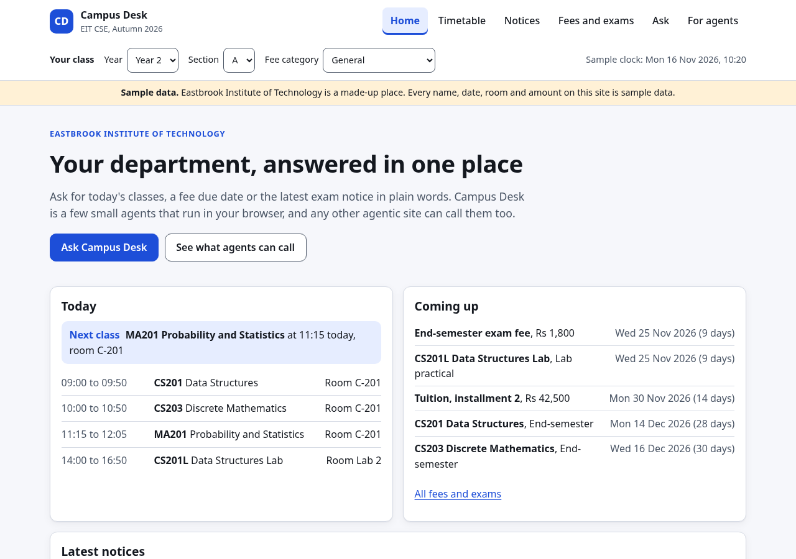
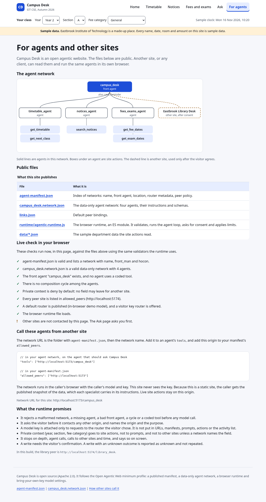
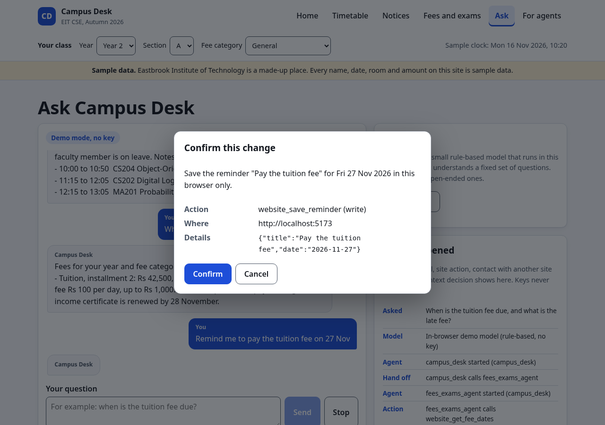
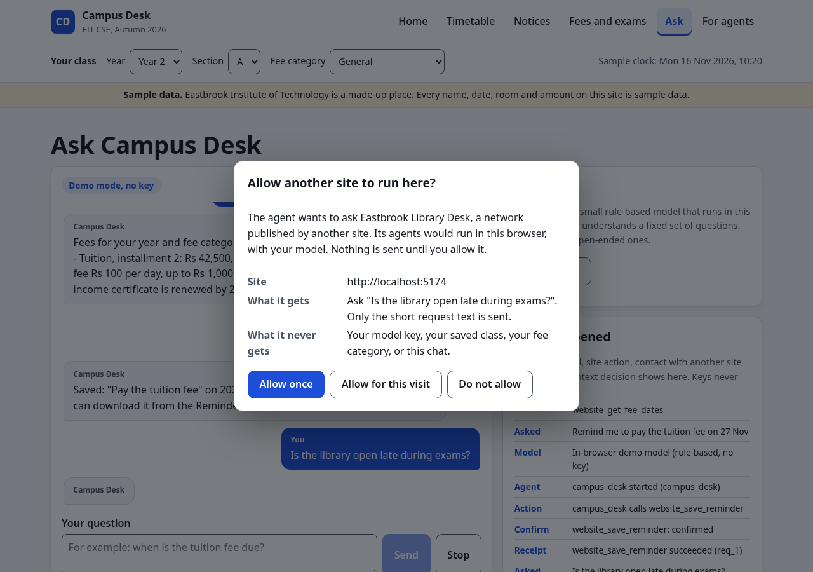

Open Agentic Web Challenge
A college department website that other agents can use too.
Students ask in plain words. Small agents answer from the department's own timetable, notices, fee dates and exam dates, in the visitor's browser.
ManifestBrowser runtimeBring your own keyOpen source
The department in this demo is made up. All sample data is marked as sample data.

The problem
What a student needs
One place to ask. Answers for their own year and section. A clear sign when a class is cancelled. A reminder they can keep.
What the department needs
A way to publish once and let any approved client use it, without running a server or sharing student data.
How it works

The 60 second moment


Left: the app asks before it saves a reminder, and shows the exact action. Right: it asks before it runs another site's agents here, names the site, and lists what that site never receives.
Safe by design
| Check | How Campus Desk shows it |
|---|---|
| Publish two agents | Four agents, plain JSON, passes the reference validator |
| Default and own-key routers | Demo model by default, Gemini key in settings |
| Agent plus a site action | Timetable agent calls the timetable action |
| Peer loads after approval | Library site runs here after one click |
| Key never reaches the peer | Test records every request and its headers |
| Private context stays home | Saved class never leaves unless a network names it |
| Stop bad input visibly | Bad network, cycle, over budget, denied site |
Open and reusable
unit and interop tests
real browser checks, including accessibility on every page in light and dark
checks in agentic-check, a command anyone can run on any site
public/data/*.json, run the build, publish the folder.agentic-check tests any site's published files against the spec. We share it with the community.